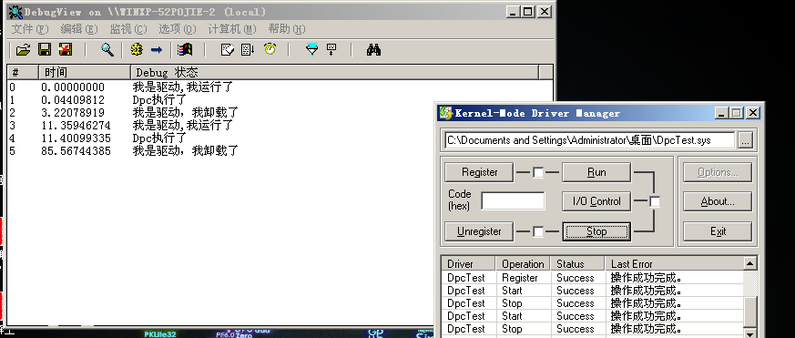

# 楔子
这是中断相关的知识，先了解中断请求级别（IRQL）
软件 IRQL (Software IRQL)
PASSIVE_LEVEL 0 // Passive release level
LOW_LEVEL 0 // Lowest interrupt level
APC_LEVEL 1 // APC interrupt level
DISPATCH_LEVEL 2 // Dispatch level
硬件 IRQL (Hardware IRQL)
DIRQL: from 3 to 26 for device ISR
PROFILE_LEVEL 27, 0x1B // Timer used for profiling.
CLOCK1_LEVEL 28, 0x1C // Interval clock 1 level - not used on x86
CLOCK2_LEVEL 28, 0x1C // Interval clock 2 level
SYNCH_LEVEL 28, 0x1C // Synchronization level
IPI_LEVEL 29, 0x1D // Interprocessor interrupt level
POWER_LEVEL 30, 0x1E // Power failure level
HIGH_LEVEL 31, 0x1F // Highest interrupt level
数值越大代表其 IRQL 的优先级越高。
# 延迟过程调用（DPC）
DPC 是 "Deferred Procedure Call" 的缩写。
简单介绍一下 DPC：DPC 是为了减少处于高 IRQL 的硬件中断处理的时间。
由于低 IRQL 的硬件中断不能中断高 IRQL 的硬件中断处理。而可能有些硬件的中断处理代码量比较大，花的时间比较多，会造成其他硬件中断的响应会等的时间比较长。
DPC 运行在 DISPATCH_LEVEL 上，低于任何一个硬件中断的 IRQL ，所以 DPC 在执行的时候不会屏蔽任何硬件中断，但由于它高于或等于任何软件中断的 IRQL ，所以它有优于任何线程的执行，也屏蔽了线程调度。可以说，DPC 是介于硬件中断和线程调度之间的一个 IRQL ，他可以打断当前线程的执行，凌驾于线程调度器纸上，但又不屏蔽任何硬件中断。
# DPC 队列
对单 cpu 的系统，整个系统只有一个 DPC 队列，对于多 cpu 系统有可能是一个 cpu 一个，这里我把 xp 虚拟机设置为了多核，查看了其每个核的 KPRCB 中 +0x860 DpcListHead : _LIST_ENTRY 处的值，都不一样。
所有的 DPC 都链在这个链上，这个队列是个 LIST_ENTRY 链表。
链上的每项都是个 KDPC 结构。
kd> dt _KDPC | |
nt!_KDPC | |
+0x000 Type : Int2B | |
+0x002 Number : UChar // 优先级也可以称为紧迫程度分别为 0 1 2 | |
+0x003 Importance : UChar // 指明目标处理器 | |
+0x004 DpcListEntry : _LIST_ENTRY // 当前结构体在 DPC 请求队列中的链表节点 | |
+0x00c DeferredRoutine : Ptr32 void // 指向具体的 DPC 函数 | |
+0x010 DeferredContext : Ptr32 Void // 执行 DPC 函数时的上下文 | |
+0x014 SystemArgument1 : Ptr32 Void // 执行 DPC 函数时的参数 | |
+0x018 SystemArgument2 : Ptr32 Void | |
+0x01c Lock : Ptr32 Uint4B //DPC 的锁 |
在 KPRCB 中挂着，等待触发时机。其中的 DeferredRoutine 是必须的，有没有上下文和参数都可以。具体的应该逆向函数。
# DPC 的初始化
在 IDA 中查看 KeInitializeDpc 函数:
; void __stdcall KeInitializeDpc(PRKDPC Dpc, PKDEFERRED_ROUTINE DeferredRoutine, PVOID DeferredContext) | |
.text:00422EEE public _KeInitializeDpc@12 | |
.text:00422EEE _KeInitializeDpc@12 proc near ; CODE XREF: IopInitializeIrpStackProfiler()+29↑p | |
.text:00422EEE ; VdmpDelayInterrupt(x)+26B↓p ... | |
.text:00422EEE | |
.text:00422EEE Dpc = dword ptr 8 | |
.text:00422EEE DeferredRoutine = dword ptr 0Ch | |
.text:00422EEE DeferredContext = dword ptr 10h | |
.text:00422EEE | |
.text:00422EEE mov edi, edi | |
.text:00422EF0 push ebp | |
.text:00422EF1 mov ebp, esp | |
.text:00422EF3 mov eax, [ebp+Dpc] | |
.text:00422EF6 mov ecx, [ebp+DeferredRoutine] | |
.text:00422EF9 and [eax+_KDPC.Lock], 0 | |
.text:00422EFD mov [eax+_KDPC.DeferredRoutine], ecx | |
.text:00422F00 mov ecx, [ebp+DeferredContext] | |
.text:00422F03 mov [eax+_KDPC.Type], 13h | |
.text:00422F08 mov [eax+_KDPC.Number], 0 | |
.text:00422F0C mov [eax+_KDPC.Importance], 1 | |
.text:00422F10 mov [eax+_KDPC.DeferredContext], ecx | |
.text:00422F13 pop ebp | |
.text:00422F14 retn 0Ch | |
.text:00422F14 _KeInitializeDpc@12 endp | |
.text:00422F14 | |
.text:00422F14 ; --------------------------------------------------------------------------- |
就是填充结构体。
参考以下代码：
VOID | |
KeInitializeDpc ( | |
IN PRKDPC Dpc, | |
IN PKDEFERRED_ROUTINE DeferredRoutine, | |
IN PVOID DeferredContext | |
) | |
/*++ | |
Routine Description: | |
This function initializes a kernel DPC object. The deferred routine | |
and context parameter are stored in the DPC object. | |
Arguments: | |
Dpc - Supplies a pointer to a control object of type DPC. | |
DeferredRoutine - Supplies a pointer to a function that is called when | |
the DPC object is removed from the current processor's DPC queue. | |
DeferredContext - Supplies a pointer to an arbitrary data structure which is | |
to be passed to the function specified by the DeferredRoutine parameter. | |
Return Value: | |
None. | |
--*/ | |
{ | |
// | |
// Initialize standard control object header. | |
// | |
Dpc->Type = DpcObject; | |
Dpc->Number = 0; | |
Dpc->Importance = MediumImportance; | |
// | |
// Initialize deferred routine address and deferred context parameter. | |
// | |
Dpc->DeferredRoutine = DeferredRoutine; | |
Dpc->DeferredContext = DeferredContext; | |
Dpc->Lock = NULL; | |
return; | |
} |
# DPC 队列的插入
逆向分析 KeInsertQueueDpc 函数
.text:00422F5A ; BOOLEAN __stdcall KeInsertQueueDpc (PRKDPC Dpc, PVOID SystemArgument1, PVOID SystemArgument2) | |
.text:00422F5A public _KeInsertQueueDpc@12 | |
.text:00422F5A _KeInsertQueueDpc@12 proc near ; CODE XREF: KeSetTimerEx (x,x,x,x,x)+7F↑p | |
.text:00422F5A ; KiCalibrateTimeAdjustment (x)+52↓p ... | |
.text:00422F5A | |
.text:00422F5A var_8 = dword ptr -8 | |
.text:00422F5A NewIrql = byte ptr -1 | |
.text:00422F5A Dpc = dword ptr 8 | |
.text:00422F5A SystemArgument1 = dword ptr 0Ch | |
.text:00422F5A SystemArgument2 = dword ptr 10h | |
.text:00422F5A | |
.text:00422F5A mov edi, edi | |
.text:00422F5C push ebp | |
.text:00422F5D mov ebp, esp | |
.text:00422F5F push ecx | |
.text:00422F60 push ecx | |
.text:00422F61 push esi | |
.text:00422F62 push edi ; 保存寄存器环境 | |
.text:00422F63 mov cl, 1Fh ; 提升 IRQL 等级。提升到了 31 了，谁也不能打断了 | |
.text:00422F65 call ds:__imp_@KfRaiseIrql@4 ; KfRaiseIrql (x) | |
.text:00422F6B mov [ebp+NewIrql], al | |
.text:00422F6E db 3Eh ; eax 存储这 KPRCB 的地址 | |
.text:00422F6E mov eax, ds:0FFDFF020h | |
.text:00422F74 mov edi, [ebp+Dpc] ; edi 指向 KDPC 结构 | |
.text:00422F77 mov esi, eax | |
.text:00422F79 lea eax, [esi+_KPRCB.DpcLock] | |
.text:00422F7F mov [ebp-8], eax ; ebp-8 的位置存储着 _KPRCB.DpcLock | |
.text:00422F82 lea eax, [edi+_KDPC.Lock] | |
.text:00422F85 mov [ebp+8], eax ; ebp + 8 存储着 _KDPC.Lock | |
.text:00422F88 mov eax, 0 | |
.text:00422F8D mov ecx, [ebp+8] ; ecx 存储着 _KDPC.Lock | |
.text:00422F90 mov edx, [ebp-8] ; edx 存储着 _KPRCB.DpcLock | |
.text:00422F93 cmpxchg [ecx], edx ; cmpxchg 指令介绍： | |
.text:00422F93 ; 将 AL、AX、EAX 或 RAX 寄存器中的值与第一个操作数（目标操作数）进行比较。 | |
.text:00422F93 ; 如果这两个值相等，则将第二个操作数（源操作数）加载到目标操作数中。 | |
.text:00422F93 ; 否则，目标操作数将被加载到 AL、AX、EAX 或 RAX 寄存器中。 | |
.text:00422F93 ; | |
.text:00422F93 ; 如果 ecx = 0 则 ecx = edx | |
.text:00422F93 ; 如果 ecx != 0 则 eax = edx | |
.text:00422F93 ; ---------- | |
.text:00422F96 test eax, eax ; 判断 eax 是否为 0 | |
.text:00422F98 mov [ebp+8], eax | |
.text:00422F9B jnz loc_42302A ; 如果不等于 0 程序结束。 | |
.text:00422F9B ; 所以上面 cmpxchg 指令的目的就是使_KDPC.Lock = _KPRCB.DpcLock | |
.text:00422FA1 inc [esi+_KPRCB.DpcCount] | |
.text:00422FA7 add [esi+_KPRCB.DpcQueueDepth], 1 | |
.text:00422FAE cmp [edi+_KDPC.Importance], 2 ; 查看优先级是否是最高级 | |
.text:00422FB2 mov eax, [ebp+SystemArgument1] | |
.text:00422FB5 mov [edi+_KDPC.SystemArgument1], eax ; 填充 KDPC 结构体的参数成员 | |
.text:00422FB8 mov eax, [ebp+SystemArgument2] | |
.text:00422FBB mov [edi+_KDPC.SystemArgument2], eax | |
.text:00422FBE lea ecx, [esi+_KPRCB.DpcListHead] ; ecx = DpcListHead | |
.text:00422FC4 lea eax, [edi+_KDPC.DpcListEntry] ; eax = 当前结构体在 DPC 请求队列中的链表节点 | |
.text:00422FC7 jnz short loc_422FD7 ; 如果优先级不是最高则跳转 | |
.text:00422FC7 ; | |
.text:00422FC7 ; 以下是链表操作，加到队头 | |
.text:00422FC9 mov edx, [ecx+_LIST_ENTRY.Flink] ; edx = DpcListHead | |
.text:00422FCB mov [eax+_LIST_ENTRY.Flink], edx ; 把当前节点的前面指向链表的首部 | |
.text:00422FCD mov [eax+_LIST_ENTRY.Blink], ecx ; 把当前节点的后一个指向链表首部的前一个 | |
.text:00422FD0 mov [edx+_LIST_ENTRY.Blink], eax ; edx = 当前节点的 后一个_LIST_ENTRY.Blink | |
.text:00422FD3 mov [ecx+_LIST_ENTRY.Flink], eax ; 更新_KPRCB.DpcListHead 的值 | |
.text:00422FD5 jmp short loc_422FE4 ; 判断当前有没有要执行的 DPC | |
.text:00422FD7 ; --------------------------------------------------------------------------- | |
.text:00422FD7 | |
.text:00422FD7 loc_422FD7: ; CODE XREF: KeInsertQueueDpc (x,x,x)+6D↑j | |
.text:00422FD7 mov edx, [ecx+4] ; 以下是链表操作，加到队尾 | |
.text:00422FDA mov [eax], ecx | |
.text:00422FDC mov [eax+4], edx | |
.text:00422FDF mov [edx], eax | |
.text:00422FE1 mov [ecx+4], eax | |
.text:00422FE4 | |
.text:00422FE4 loc_422FE4: ; CODE XREF: KeInsertQueueDpc (x,x,x)+7B↑j | |
.text:00422FE4 cmp [esi+_KPRCB.DpcRoutineActive], 0 ; 判断当前有没有要执行的 DPC | |
.text:00422FEB jnz short loc_42302A ; 有的话就退出了，不插入队列 | |
.text:00422FED cmp [esi+_KPRCB.DpcInterruptRequested], 0 ; 判断有没有中断的 DPC | |
.text:00422FF4 jnz short loc_42302A | |
.text:00422FF6 cmp [edi+_KDPC.Importance], 0 ; 查看优先级是否为 0 | |
.text:00422FFA jnz short loc_423018 ; 优先级不为 0 则跳转开始触发 DPC | |
.text:00422FFC mov eax, [esi+_KPRCB.DpcQueueDepth] | |
.text:00423002 cmp eax, [esi+_KPRCB.MaximumDpcQueueDepth] ; 比较 DPC 队列深度是否小于最大队列深度 | |
.text:00423008 jnb short loc_423018 ; 如果不小于则跳转 | |
.text:0042300A mov eax, [esi+_KPRCB.DpcRequestRate] | |
.text:00423010 cmp eax, [esi+_KPRCB.MinimumDpcRate] | |
.text:00423016 jnb short loc_42302A ; 如果不小于则直接返回。 | |
.text:00423018 | |
.text:00423018 loc_423018: ; CODE XREF: KeInsertQueueDpc (x,x,x)+A0↑j | |
.text:00423018 ; KeInsertQueueDpc (x,x,x)+AE↑j | |
.text:00423018 mov cl, 2 ; 设置中断等级为 2 | |
.text:0042301A mov [esi+_KPRCB.DpcInterruptRequested], 1 | |
.text:00423024 call ds:__imp_@HalRequestSoftwareInterrupt@4 ; 请求软件中断 | |
.text:0042302A | |
.text:0042302A loc_42302A: ; CODE XREF: KeInsertQueueDpc (x,x,x)+41↑j | |
.text:0042302A ; KeInsertQueueDpc (x,x,x)+91↑j ... | |
.text:0042302A mov cl, [ebp+NewIrql] ; 把原来的 IRQL 还原 | |
.text:0042302D call ds:__imp_@KfLowerIrql@4 ; KfLowerIrql (x) | |
.text:00423033 xor eax, eax | |
.text:00423035 cmp [ebp+8], eax | |
.text:00423038 pop edi | |
.text:00423039 setz al ; 汇编指令 SETZ (SETE) SETNZ (SETNE) | |
.text:00423039 ; 取标志寄存器中 ZF 的值，放到 AL 中。 | |
.text:00423039 ; SETNE 取得 ZF 值后，取反，再放到 AL 中。 | |
.text:0042303C pop esi | |
.text:0042303D leave | |
.text:0042303E retn 0Ch | |
.text:0042303E _KeInsertQueueDpc@12 endp | |
.text:0042303E | |
.text:0042303E ; --------------------------------------------------------------------------- |
参考以下代码：
#define ASSERT_DPC(E) { \ | |
ASSERT((E)->Type == DpcObject); \ | |
} | |
BOOLEAN | |
KeInsertQueueDpc ( | |
IN PRKDPC Dpc, | |
IN PVOID SystemArgument1, | |
IN PVOID SystemArgument2 | |
) | |
/*++ | |
Routine Description: | |
This function inserts a DPC object into the DPC queue. If the DPC object | |
is already in the DPC queue, then no operation is performed. Otherwise, | |
the DPC object is inserted in the DPC queue and a dispatch interrupt is | |
requested. | |
Arguments: | |
Dpc - Supplies a pointer to a control object of type DPC. | |
SystemArgument1, SystemArgument2 - Supply a set of two arguments that | |
contain untyped data provided by the executive. | |
Return Value: | |
If the DPC object is already in a DPC queue, then a value of FALSE is | |
returned. Otherwise a value of TRUE is returned. | |
--*/ | |
{ | |
ULONG Index; | |
PKSPIN_LOCK Lock; | |
KIRQL OldIrql; | |
PKPRCB Prcb; | |
ULONG Processor; | |
ASSERT_DPC(Dpc); | |
// | |
// Disable interrupts. | |
// | |
KeRaiseIrql(HIGH_LEVEL, &OldIrql); | |
// | |
// Acquire the DPC queue lock for the specified target processor. | |
// | |
#if !defined(NT_UP) | |
if (Dpc->Number >= MAXIMUM_PROCESSORS) { | |
Processor = Dpc->Number - MAXIMUM_PROCESSORS; | |
Prcb = KiProcessorBlock[Processor]; | |
} else { | |
Prcb = KeGetCurrentPrcb(); | |
} | |
KiAcquireSpinLock(&Prcb->DpcLock); | |
#else | |
Prcb = KeGetCurrentPrcb(); | |
#endif | |
// | |
// If the DPC object is not in a DPC queue, then store the system | |
// arguments, insert the DPC object in the DPC queue, increment the | |
// number of DPCs queued to the target processor, increment the DPC | |
// queue depth, set the address of the DPC target DPC spinlock, and | |
// request a dispatch interrupt if appropriate. | |
// | |
if ((Lock = InterlockedCompareExchangePointer(&Dpc->Lock, &Prcb->DpcLock, NULL)) == NULL) { | |
Prcb->DpcCount += 1; | |
Prcb->DpcQueueDepth += 1; | |
Dpc->SystemArgument1 = SystemArgument1; | |
Dpc->SystemArgument2 = SystemArgument2; | |
// | |
// If the DPC is of high importance, then insert the DPC at the | |
// head of the DPC queue. Otherwise, insert the DPC at the end | |
// of the DPC queue. | |
// | |
if (Dpc->Importance == HighImportance) { | |
InsertHeadList(&Prcb->DpcListHead, &Dpc->DpcListEntry); | |
} else { | |
InsertTailList(&Prcb->DpcListHead, &Dpc->DpcListEntry); | |
} | |
// | |
// A memory barrier is required here to synchronize with retire DPC | |
// list, which clears DpcRoutineActive and DpcInterruptRequested | |
// without owning the dispatcher lock. | |
// | |
#if defined(_ALPHA_) && !defined(NT_UP) | |
__MB(); | |
#endif | |
// | |
// If a DPC routine is not active on the target processor, then | |
// request a dispatch interrupt if appropriate. | |
// | |
if ((Prcb->DpcRoutineActive == FALSE) && | |
(Prcb->DpcInterruptRequested == FALSE)) { | |
// | |
// Request a dispatch interrupt on the current processor if | |
// the DPC is not of low importance, the length of the DPC | |
// queue has exceeded the maximum threshold, or if the DPC | |
// request rate is below the minimum threshold. | |
// | |
#if defined(NT_UP) | |
if ((Dpc->Importance != LowImportance) || | |
(Prcb->DpcQueueDepth >= Prcb->MaximumDpcQueueDepth) || | |
(Prcb->DpcRequestRate < Prcb->MinimumDpcRate)) { | |
Prcb->DpcInterruptRequested = TRUE; | |
KiRequestSoftwareInterrupt(DISPATCH_LEVEL); | |
} | |
// | |
// If the DPC is being queued to another processor and the | |
// DPC is of high importance, or the length of the other | |
// processor's DPC queue has exceeded the maximum threshold, | |
// then request a dispatch interrupt. | |
// | |
#else | |
if (Prcb != KeGetCurrentPrcb()) { | |
if (((Dpc->Importance == HighImportance) || | |
(Prcb->DpcQueueDepth >= Prcb->MaximumDpcQueueDepth))) { | |
Prcb->DpcInterruptRequested = TRUE; | |
KiIpiSend((KAFFINITY)(1 << Processor), IPI_DPC); | |
} | |
} else { | |
// | |
// Request a dispatch interrupt on the current processor if | |
// the DPC is not of low importance, the length of the DPC | |
// queue has exceeded the maximum threshold, or if the DPC | |
// request rate is below the minimum threshold. | |
// | |
if ((Dpc->Importance != LowImportance) || | |
(Prcb->DpcQueueDepth >= Prcb->MaximumDpcQueueDepth) || | |
(Prcb->DpcRequestRate < Prcb->MinimumDpcRate)) { | |
Prcb->DpcInterruptRequested = TRUE; | |
KiRequestSoftwareInterrupt(DISPATCH_LEVEL); | |
} | |
} | |
#endif | |
} | |
} | |
// | |
// Release the DPC lock, enable interrupts, and return whether the | |
// DPC was queued or not. | |
// | |
#if !defined(NT_UP) | |
KiReleaseSpinLock(&Prcb->DpcLock); | |
#endif | |
KeLowerIrql(OldIrql); | |
return (Lock == NULL); | |
} |
# DPC 移除队列
逆向 KeRemoveQueueDpc
.text:00424954 ; BOOLEAN __stdcall KeRemoveQueueDpc (PRKDPC Dpc) | |
.text:00424954 public _KeRemoveQueueDpc@4 | |
.text:00424954 _KeRemoveQueueDpc@4 proc near ; CODE XREF: ExTimerRundown ()+90↓p | |
.text:00424954 ; NtCancelTimer (x,x)+AD↓p ... | |
.text:00424954 | |
.text:00424954 Dpc = dword ptr 8 | |
.text:00424954 | |
.text:00424954 mov edi, edi | |
.text:00424956 push ebp | |
.text:00424957 mov ebp, esp | |
.text:00424959 push esi | |
.text:0042495A push edi | |
.text:0042495B cli | |
.text:0042495C mov esi, [ebp+Dpc] | |
.text:0042495F mov edi, [esi+_KDPC.Lock] | |
.text:00424962 test edi, edi | |
.text:00424964 jz short loc_42498C | |
.text:00424966 mov ecx, edi | |
.text:00424968 call @KiAcquireSpinLock@4 ; KiAcquireSpinLock (x) | |
.text:0042496D cmp edi, [esi+_KDPC.Lock] | |
.text:00424970 jnz short loc_424985 | |
.text:00424972 sub dword ptr [edi-30h], 1 | |
.text:00424976 mov eax, [esi+_KDPC.DpcListEntry.Flink] ; 链表操作，从队列中移除 | |
.text:00424979 mov ecx, [esi+_KDPC.DpcListEntry.Blink] | |
.text:0042497C mov [ecx+_LIST_ENTRY.Flink], eax | |
.text:0042497E mov [eax+_LIST_ENTRY.Blink], ecx | |
.text:00424981 and [esi+_KDPC.Lock], 0 ; Lock = 0 | |
.text:00424985 | |
.text:00424985 loc_424985: ; CODE XREF: KeRemoveQueueDpc (x)+1C↑j | |
.text:00424985 mov ecx, edi | |
.text:00424987 call @KiReleaseSpinLock@4 ; KiReleaseSpinLock (x) | |
.text:0042498C | |
.text:0042498C loc_42498C: ; CODE XREF: KeRemoveQueueDpc (x)+10↑j | |
.text:0042498C sti | |
.text:0042498D xor eax, eax | |
.text:0042498F test edi, edi | |
.text:00424991 pop edi | |
.text:00424992 setnz al | |
.text:00424995 pop esi | |
.text:00424996 pop ebp | |
.text:00424997 retn 4 | |
.text:00424997 _KeRemoveQueueDpc@4 endp | |
.text:00424997 | |
.text:00424997 ; --------------------------------------------------------------------------- |
参考以下代码：
#define ASSERT_DPC(E) { \ | |
ASSERT((E)->Type == DpcObject); \ | |
} | |
BOOLEAN | |
KeRemoveQueueDpc ( | |
IN PRKDPC Dpc | |
) | |
/*++ | |
Routine Description: | |
This function removes a DPC object from the DPC queue. If the DPC object | |
is not in the DPC queue, then no operation is performed. Otherwise, the | |
DPC object is removed from the DPC queue and its inserted state is set | |
FALSE. | |
Arguments: | |
Dpc - Supplies a pointer to a control object of type DPC. | |
Return Value: | |
If the DPC object is not in the DPC queue, then a value of FALSE is | |
returned. Otherwise a value of TRUE is returned. | |
--*/ | |
{ | |
PKSPIN_LOCK Lock; | |
PKPRCB Prcb; | |
ASSERT_DPC(Dpc); | |
// | |
// If the DPC object is in the DPC queue, then remove it from the queue | |
// and set its inserted state to FALSE. | |
// | |
_disable(); | |
Lock = Dpc->Lock; | |
if (Lock != NULL) { | |
// | |
// Acquire the DPC lock of the target processor. | |
// | |
#if !defined(NT_UP) | |
KiAcquireSpinLock(Lock); | |
#endif | |
// | |
// If the specified DPC is still in the DPC queue, then remove | |
// it. | |
// | |
// N.B. It is possible for specified DPC to be removed from the | |
// specified DPC queue before the DPC lock is obtained. | |
// | |
// | |
if (Lock == Dpc->Lock) { | |
Prcb = CONTAINING_RECORD(Lock, KPRCB, DpcLock); | |
Prcb->DpcQueueDepth -= 1; | |
RemoveEntryList(&Dpc->DpcListEntry); | |
#if defined(_ALPHA_) && !defined(NT_UP) | |
__MB(); | |
#endif | |
Dpc->Lock = NULL; | |
} | |
// | |
// Release the DPC lock of the target processor. | |
// | |
#if !defined(NT_UP) | |
KiReleaseSpinLock(Lock); | |
#endif | |
} | |
// | |
// Enable interrupts and return whether the DPC was removed from a DPC | |
// queue. | |
// | |
_enable(); | |
return (Lock != NULL); | |
} |
# DPC 的执行
之前分析的 KiDispatchInterrupt 函数的开头，就有处理 DPC 的片段。
.text:0046EAE0 _KiDispatchInterrupt@0 proc near | |
.text:0046EAE0 | |
.text:0046EAE0 var_C = dword ptr -0Ch | |
.text:0046EAE0 var_8 = dword ptr -8 | |
.text:0046EAE0 var_4 = dword ptr -4 | |
.text:0046EAE0 | |
.text:0046EAE0 mov ebx, large fs:1Ch ; ebx: KPCR | |
.text:0046EAE7 | |
.text:0046EAE7 loc_46EAE7: ; CODE XREF: KiDispatchInterrupt ()+B9↓j | |
.text:0046EAE7 lea eax, [ebx+_KPCR.PrcbData.DpcListHead] | |
.text:0046EAED cli ; 屏蔽中断 | |
.text:0046EAEE cmp eax, [eax] ; check if DPC List is empty | |
.text:0046EAF0 jz short loc_46EB0F ; if eq, list is empty | |
.text:0046EAF2 push ebp ; save register | |
.text:0046EAF3 push [ebx+_KPCR.NtTib.ExceptionList] ; DPC 中发生的异常与中断线程中的任何异常处理程序无关。 | |
.text:0046EAF5 mov [ebx+_KPCR.NtTib.ExceptionList], 0FFFFFFFFh ; 终止异常列表。 | |
.text:0046EAFB mov edx, esp | |
.text:0046EAFD mov esp, [ebx+_KPCR.PrcbData.DpcStack] ; 切换到此处理器的 DPC 堆栈。 | |
.text:0046EB03 push edx | |
.text:0046EB04 mov ebp, eax ; 设置 DPC Listhead 的地址 | |
.text:0046EB06 call KiRetireDpcList ; 处理当前 DPC 列表 | |
.text:0046EB0B pop esp ; 切换回当前线程堆栈，恢复异常列表和保存的 EBP。 | |
.text:0046EB0C pop dword ptr [ebx] | |
.text:0046EB0E pop ebp | |
.text:0046EB0F |
可以看到 KiDispatchInterrupt 调用了 KiRetireDpcList 来处理 DPC 队列。
.text:0046EF3E ; =============== S U B R O U T I N E ======================================= | |
.text:0046EF3E | |
.text:0046EF3E | |
.text:0046EF3E KiRetireDpcList proc near ; CODE XREF: KiDispatchInterrupt ()+26↑p | |
.text:0046EF3E ; KiIdleLoop ()+23↑p | |
.text:0046EF3E | |
.text:0046EF3E var_24 = dword ptr -24h | |
.text:0046EF3E var_14 = dword ptr -14h | |
.text:0046EF3E var_10 = dword ptr -10h | |
.text:0046EF3E var_C = dword ptr -0Ch | |
.text:0046EF3E var_8 = dword ptr -8 | |
.text:0046EF3E | |
.text:0046EF3E push esi | |
.text:0046EF3F lea esi, [ebx+_KPCR.PrcbData.DpcLock] ; get DPC lock address | |
.text:0046EF45 push 0 | |
.text:0046EF47 sub esp, 0Ch | |
.text:0046EF4A cmp ds:_PPerfGlobalGroupMask, 0 | |
.text:0046EF51 jnz loc_46EFDC | |
.text:0046EF57 | |
.text:0046EF57 loc_46EF57: ; CODE XREF: KiRetireDpcList+85↓j | |
.text:0046EF57 ; KiRetireDpcList+A6↓j ... | |
.text:0046EF57 mov large fs:_KPCR.PrcbData.DpcRoutineActive, esp ; 设置 DPC 例程激活 | |
.text:0046EF5E | |
.text:0046EF5E loc_46EF5E: ; CODE XREF: KiRetireDpcList+6C↓j | |
.text:0046EF5E lock bts dword ptr [esi], 0 ; BTS 指令的作用： | |
.text:0046EF5E ; 两件事: | |
.text:0046EF5E ; 一、 | |
.text:0046EF5E ; 取 esi 比特位的第 0 位存在 CF 标志位中。 | |
.text:0046EF5E ; 二、 | |
.text:0046EF5E ; lock bts dword ptr [esi],0 | |
.text:0046EF5E ; 将 dword ptr [esi] 指向的内存地址的第 0 位置 1 | |
.text:0046EF63 jb short loc_46EFCF ; CF = 1 则跳转 | |
.text:0046EF65 cmp ebp, [ebp+_LIST_ENTRY.Flink] ; check if DPC list is empty | |
.text:0046EF68 jz short loc_46EFCA ; DPC 的锁置为 0 | |
.text:0046EF6A mov edx, [ebp+_LIST_ENTRY.Flink] | |
.text:0046EF6D mov ecx, [edx+_LIST_ENTRY.Flink] | |
.text:0046EF6F mov [ebp+_LIST_ENTRY.Flink], ecx | |
.text:0046EF72 mov [ecx+_LIST_ENTRY.Blink], ebp | |
.text:0046EF75 sub edx, 4 ; -0x4 获得 DPC 对象 KDPC 结构的首地址 | |
.text:0046EF78 mov ecx, [edx+_KDPC.DeferredRoutine] | |
.text:0046EF7B push [edx+_KDPC.SystemArgument2] | |
.text:0046EF7E push [edx+_KDPC.SystemArgument1] | |
.text:0046EF81 push [edx+_KDPC.DeferredContext] | |
.text:0046EF84 push edx | |
.text:0046EF85 mov [edx+_KDPC.Lock], 0 ; 清除 DPC 插入状态 | |
.text:0046EF8C dec [ebx+_KPCR.PrcbData.DpcQueueDepth] ; 递减深度 | |
.text:0046EF92 mov byte ptr [esi], 0 ; 释放 DPC 锁 | |
.text:0046EF95 sti ; enable interrupts | |
.text:0046EF96 cmp dword ptr [esp+1Ch], 0 ; 这里有待调试分析 | |
.text:0046EF9B jnz short loc_46F004 | |
.text:0046EF9D | |
.text:0046EF9D loc_46EF9D: ; CODE XREF: KiRetireDpcList+DD↓j | |
.text:0046EF9D call ecx | |
.text:0046EF9F cmp [esp+14h+var_8], 0 ; 若不为 0 会分析 log 相关的 | |
.text:0046EFA4 jnz short loc_46F01D | |
.text:0046EFA6 | |
.text:0046EFA6 loc_46EFA6: ; CODE XREF: KiRetireDpcList+98↓j | |
.text:0046EFA6 ; KiRetireDpcList+F1↓j | |
.text:0046EFA6 cli | |
.text:0046EFA7 cmp ebp, [ebp+_LIST_ENTRY.Flink] ; check if DPC list is empty | |
.text:0046EFAA jnz short loc_46EF5E ; BTS 指令的作用： | |
.text:0046EFAA ; 两件事: | |
.text:0046EFAA ; 一、 | |
.text:0046EFAA ; 取 esi 比特位的第 0 位存在 CF 标志位中。 | |
.text:0046EFAA ; 二、 | |
.text:0046EFAA ; lock bts dword ptr [esi],0 | |
.text:0046EFAA ; 将 dword ptr [esi] 指向的内存地址的第 0 位置 1 | |
.text:0046EFAC | |
.text:0046EFAC loc_46EFAC: ; CODE XREF: KiRetireDpcList+8F↓j | |
.text:0046EFAC mov [ebx+_KPCR.PrcbData.DpcRoutineActive], 0 | |
.text:0046EFB6 mov [ebx+_KPCR.PrcbData.DpcInterruptRequested], 0 | |
.text:0046EFC0 cmp ebp, [ebp+_LIST_ENTRY.Flink] ; check if DPC list is empty | |
.text:0046EFC3 jnz short loc_46EF57 ; DPC 列表不为空，则继续执行 DPC | |
.text:0046EFC5 add esp, 10h | |
.text:0046EFC8 pop esi | |
.text:0046EFC9 retn | |
.text:0046EFCA ; --------------------------------------------------------------------------- | |
.text:0046EFCA | |
.text:0046EFCA loc_46EFCA: ; CODE XREF: KiRetireDpcList+2A↑j | |
.text:0046EFCA mov byte ptr [esi], 0 ; DPC 的锁置为 0 | |
.text:0046EFCD jmp short loc_46EFAC ; 返回 | |
.text:0046EFCF ; --------------------------------------------------------------------------- | |
.text:0046EFCF | |
.text:0046EFCF loc_46EFCF: ; CODE XREF: KiRetireDpcList+25↑j | |
.text:0046EFCF sti | |
.text:0046EFD0 | |
.text:0046EFD0 loc_46EFD0: ; CODE XREF: KiRetireDpcList+9C↓j | |
.text:0046EFD0 test dword ptr [esi], 1 | |
.text:0046EFD6 jz short loc_46EFA6 | |
.text:0046EFD8 pause | |
.text:0046EFDA jmp short loc_46EFD0 | |
.text:0046EFDC ; --------------------------------------------------------------------------- | |
.text:0046EFDC | |
.text:0046EFDC loc_46EFDC: ; CODE XREF: KiRetireDpcList+13↑j | |
.text:0046EFDC mov eax, ds:_PPerfGlobalGroupMask | |
.text:0046EFE1 cmp eax, 0 | |
.text:0046EFE4 jz loc_46EF57 ; 设置 DPC 例程激活 | |
.text:0046EFEA test dword ptr [eax+4], 80h | |
.text:0046EFF1 jz loc_46EF57 ; 设置 DPC 例程激活 | |
.text:0046EFF7 mov [esp+14h+var_8], 1 | |
.text:0046EFFF jmp loc_46EF57 ; 设置 DPC 例程激活 | |
.text:0046F004 ; --------------------------------------------------------------------------- | |
.text:0046F004 | |
.text:0046F004 loc_46F004: ; CODE XREF: KiRetireDpcList+5D↑j | |
.text:0046F004 push ecx | |
.text:0046F005 call ds:_WmiGetCpuClock ; WmipGetSystemTime () | |
.text:0046F00B pop ecx | |
.text:0046F00C mov [esp+24h+var_14], eax | |
.text:0046F010 mov [esp+24h+var_10], edx | |
.text:0046F014 mov edx, [esp+24h+var_24] | |
.text:0046F017 mov [esp+24h+var_C], ecx | |
.text:0046F01B jmp short loc_46EF9D | |
.text:0046F01D ; --------------------------------------------------------------------------- | |
.text:0046F01D | |
.text:0046F01D loc_46F01D: ; CODE XREF: KiRetireDpcList+66↑j | |
.text:0046F01D mov eax, [esp+14h+var_14] | |
.text:0046F020 mov edx, [esp+14h+var_10] | |
.text:0046F024 push edx | |
.text:0046F025 push eax | |
.text:0046F026 mov ecx, [esp+1Ch+var_C] | |
.text:0046F02A call @PerfInfoLogDpc@12 ; PerfInfoLogDpc (x,x,x) | |
.text:0046F02F jmp loc_46EFA6 | |
.text:0046F02F KiRetireDpcList endp | |
.text:0046F02F | |
.text:0046F034 | |
.text:0046F034 ; =============== S U B R O U T I N E ======================================= |
可以参考以下代码：
VOID | |
KiRetireDpcList ( | |
PKPRCB Prcb | |
) | |
/*++ | |
Routine Description: | |
This function processes the DPC list for the specified processor. | |
N.B. This function is entered with interrupts disabled and exits with | |
interrupts disabled. | |
Arguments: | |
Prcb - Supplies the address of the processor block. | |
Return Value: | |
None. | |
--*/ | |
{ | |
PKDPC Dpc; | |
PVOID DeferredContext; | |
PKDEFERRED_ROUTINE DeferredRoutine; | |
PLIST_ENTRY Entry; | |
PLIST_ENTRY ListHead; | |
PVOID SystemArgument1; | |
PVOID SystemArgument2; | |
ULONG TimerHand; | |
// | |
// Loop processing DPC list entries until the specified DPC list is empty. | |
// | |
// N.B. This following code appears to have a redundant loop, but it does | |
// not. The point of this code is to avoid as many dispatch interrupts | |
// as possible. | |
// | |
ListHead = &Prcb->DpcListHead; | |
do { | |
Prcb->DpcRoutineActive = TRUE; | |
// | |
// If the timer hand value is nonzero, then process expired timers. | |
// | |
if ((TimerHand = Prcb->TimerHand) != 0) { | |
Prcb->TimerHand = 0; | |
_enable(); | |
KiTimerExpiration(NULL, NULL, UlongToHandle(TimerHand - 1), NULL); | |
_disable(); | |
} | |
// | |
// If the DPC list is not empty, then process the DPC list. | |
// | |
if (Prcb->DpcQueueDepth != 0) { | |
// | |
// Acquire the DPC lock for the current processor and check if | |
// the DPC list is empty. If the DPC list is not empty, then | |
// remove the first entry from the DPC list, capture the DPC | |
// parameters, set the DPC inserted state false, decrement the | |
// DPC queue depth, release the DPC lock, enable interrupts, and | |
// call the specified DPC routine. Otherwise, release the DPC | |
// lock and enable interrupts. | |
// | |
do { | |
KeAcquireSpinLockAtDpcLevel(&Prcb->DpcLock); | |
Entry = Prcb->DpcListHead.Flink; | |
if (Entry != ListHead) { | |
RemoveEntryList(Entry); | |
Dpc = CONTAINING_RECORD(Entry, KDPC, DpcListEntry); | |
DeferredRoutine = Dpc->DeferredRoutine; | |
DeferredContext = Dpc->DeferredContext; | |
SystemArgument1 = Dpc->SystemArgument1; | |
SystemArgument2 = Dpc->SystemArgument2; | |
Dpc->Lock = NULL; | |
Prcb->DpcQueueDepth -= 1; | |
KeReleaseSpinLockFromDpcLevel(&Prcb->DpcLock); | |
_enable(); | |
(DeferredRoutine)(Dpc, | |
DeferredContext, | |
SystemArgument1, | |
SystemArgument2); | |
ASSERT(KeGetCurrentIrql() == DISPATCH_LEVEL); | |
_disable(); | |
} else { | |
ASSERT(Prcb->DpcQueueDepth == 0); | |
KeReleaseSpinLockFromDpcLevel(&Prcb->DpcLock); | |
} | |
} while (ListHead != *((PLIST_ENTRY volatile *)&ListHead->Flink)); | |
} | |
Prcb->DpcRoutineActive = FALSE; | |
Prcb->DpcInterruptRequested = FALSE; | |
} while (ListHead != *((PLIST_ENTRY volatile *)&ListHead->Flink)); | |
return; | |
} |
# 总结
从上述的逆向分析可以得知，DPC 优先于线程切换，必须得先把 DPC 执行完，才能执行线程。验证了上述概念。
# 写代码验证 DPC
代码很简单：
#include<ntddk.h> | |
KDPC dpc = { 0 }; | |
VOID DriverUnload(PDRIVER_OBJECT pDriver) { | |
DbgPrint("我是驱动，我卸载了\t\n"); | |
} | |
VOID dpcCall( | |
//_In_ struct _KDPC* Dpc, | |
_In_opt_ PVOID DeferredContext, | |
_In_opt_ PVOID SystemArgument1, | |
_In_opt_ PVOID SystemArgument2 | |
) { | |
DbgPrint("Dpc执行了\t\n"); | |
} | |
NTSTATUS DriverEntry(PDRIVER_OBJECT pDriver, PUNICODE_STRING pRegPath) { | |
pDriver->DriverUnload = DriverUnload; | |
DbgPrint("我是驱动,我运行了\t\n"); | |
KeInitializeDpc(&dpc, dpcCall, NULL); | |
KeInsertQueueDpc(&dpc, NULL, NULL); | |
return STATUS_SUCCESS; | |
} |
截图：

# Reference
windows 泄露的源码
《Windows 内核原理与实现》
https://blog.csdn.net/imquestion/article/details/1286641